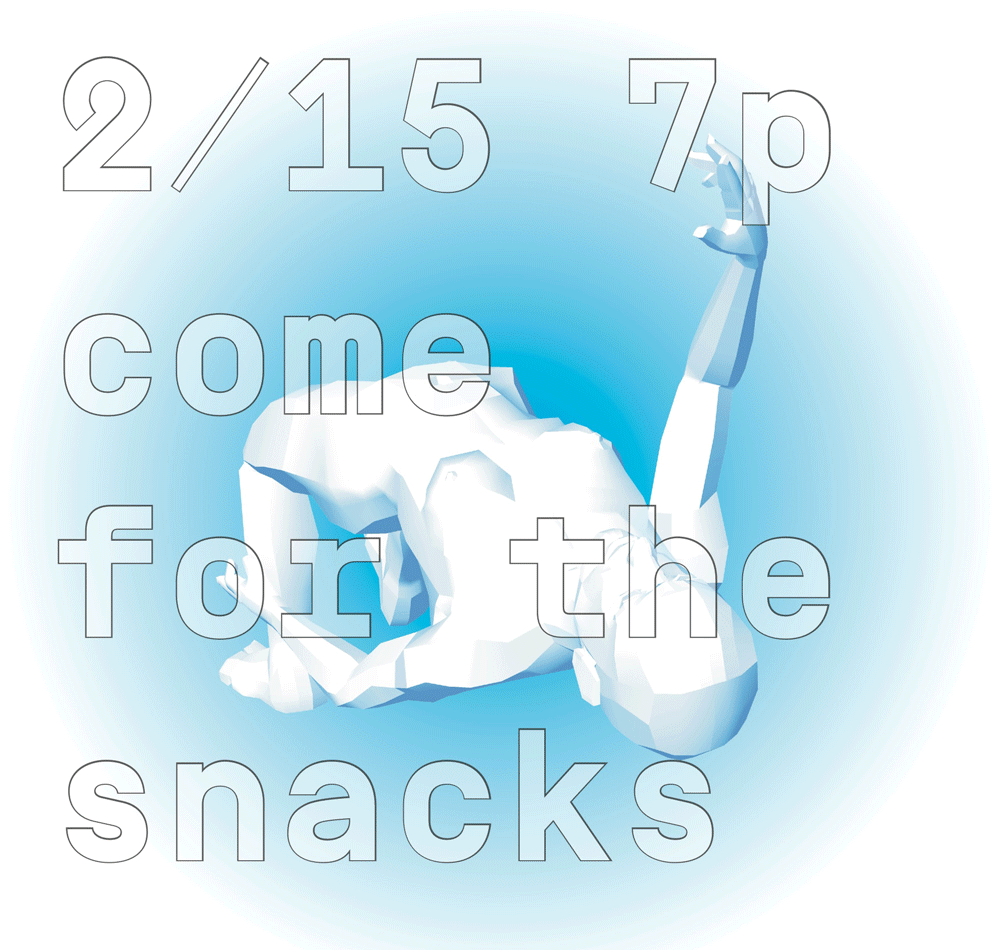

RISD STEAM
project management, graphic design, scaling
RISD STEAM is a student group at RISD which aims to engage students with the rising push to include art and design thinking into the traditional "STEM" model of education. We do this through hosting events that are workshops, lectures, and discussions.
Since it's founding in 2013, RISD STEAM has spread to Brown, MIT, and Yale.
Part of my job in RISD STEAM was to create Catalogue Two, a combination of our thoughts and learnings about integrating the arts and sciences through education. Many thanks to Catherine for all of her help. Full .pdf here.

Other activities I did for STEAM include designing miscellaneous posters, teaching a workshop on Arduino and 3D printing, and respresenting STEAM at various events. Go STEAM go!